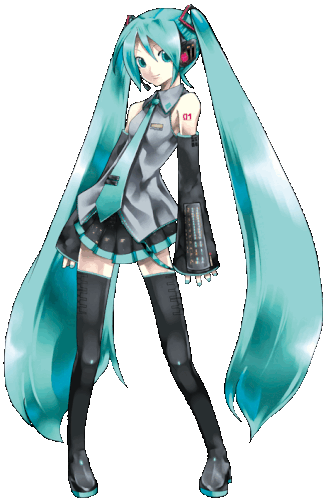

Vad är en Vocaloid?
Den första vocaloiden skapades år 2007 och heter hatsune miku. Sen dess så har det skapats flera stycken på olika språk t.ex. GUMI på engelska och det finns även flera stycken på japanska som hatsune miku t.ex. Luka. En Vocaloid är ett program som dess syfte är att producera röst i låtar istället för en riktigt person för att göra det lättare för låtskrivare att producera låtar.
